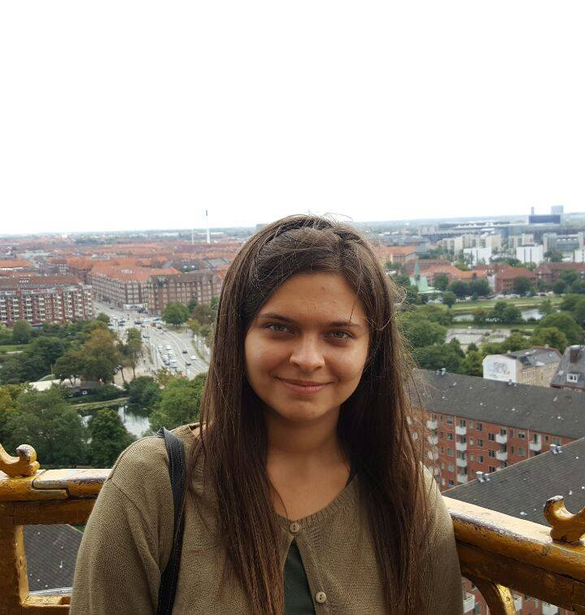

About me
Larisa Ailisoaie
Multimedia Design and Communication Student
I am girl that was born in 1998 in Botosani, a small but very beautiful city from the North of Romania. I lived there until I moved here, half a year ago, I never moved to different places and I have a very stong connection with the place I was born and also with my lovely parents.
I consider myself a friendly person, open-minded, creative, curious, optimistic, hard working and last thing that is characteristic for me is that I never give up easy
I like to travel all over the world and anytime, to do different extreme activities, to draw and sketch and to sing. Also, I like sports as voleyball and handball (I was part of the handball team of the school for 3 years).
At the moment I am studying Multimedia, Design and Communication at Copenhagen School of Design and Technology. I am looking forward in learning as much as possible about design and coding to improve my knowledge and skills.
